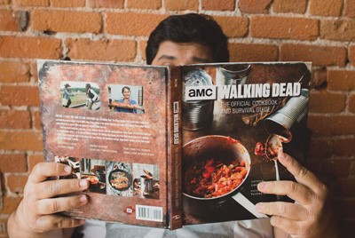

Кулинарная книга по мотивам сериала «Ходячие мертвецы.
Американский канал AMC в сотрудничестве с издательством с Insight Editions выпустил кулинарную книгу, посвященную нашумевшему сериалу «Ходячие мертвецы». Книга «The Walking Dead: The Official Cookbook And Survival Guide» («Ходячие мертвецы: официальная поваренная книга и руководство по выживанию») содержит более 60 рецептов завтраков, ужинов, десертов и напитков, тематика которых соответствует атмосфере сериала. Некоторые рецепты взяты непосредственно из самого фильма, например, «Печенье Кэрол Пелетье», «Спагетти Хершела Грина» и «Жаркое из оленя Дэрила». Книга, написанная профессиональным шеф-поваром Лорен Уилсон, также содержит советы по охоте и поиску пищи на тот случай, если мы когда-нибудь станем свидетелями зомби-апокалипсиса. Сообщается, что издание поступит в книжные магазины в октябре и будет приурочено к выходу 8-го сезона сериала «Ходячие мертвецы».
Светлана Попова